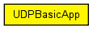
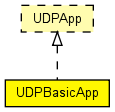

Sends UDP packets to the given IP address at the given interval. Compatible with both IPv4 and IPv6.
The interval can be a constant or a random value (e.g. exponential(1)). If the destAddresses parameter contains more than one address, one of them is randomly chosen for each packet. An address may be given in the dotted decimal notation, or with the module name. (The IPAddressResolver class is used to resolve the address.) To disable the model, set destAddresses to "".
The peer can be UDPSink or another UDPBasicApp (it handles received packets exactly like UDPSink).
The following diagram shows usage relationships between types. Unresolved types are missing from the diagram. Click here to see the full picture.
The following diagram shows inheritance relationships for this type. Unresolved types are missing from the diagram. Click here to see the full picture.
| Name | Type | Default value | Description |
|---|---|---|---|
| localPort | int |
if -1, app doesn't bind in UDP |
|
| destPort | int | ||
| messageLength | int |
length of messages to generate, in bytes |
|
| messageFreq | double |
should usually be a random value, e.g. exponential(1) |
|
| destAddresses | string | "" |
list of IP addresses, separated by spaces |
| Name | Value | Description |
|---|---|---|
| display | i=block/app |
| Name | Direction | Size | Description |
|---|---|---|---|
| udpIn | input | ||
| udpOut | output |
// // Sends \UDP packets to the given \IP address at the given interval. // Compatible with both IPv4 and IPv6. // // The interval can be a constant or a random value (e.g. exponential(1)). // If the destAddresses parameter contains more than one address, one // of them is randomly chosen for each packet. An address may be given in the // dotted decimal notation, or with the module name. (The IPAddressResolver // class is used to resolve the address.) To disable the model, set // destAddresses to "". // // The peer can be UDPSink or another UDPBasicApp (it handles received packets // exactly like UDPSink). // simple UDPBasicApp like UDPApp { parameters: int localPort; // if -1, app doesn't bind in UDP int destPort; volatile int messageLength @unit("B"); // length of messages to generate, in bytes volatile double messageFreq @unit("s"); // should usually be a random value, e.g. exponential(1) string destAddresses = default(""); // list of \IP addresses, separated by spaces @display("i=block/app"); gates: input udpIn @labels(UDPControlInfo/up); output udpOut @labels(UDPControlInfo/down); }